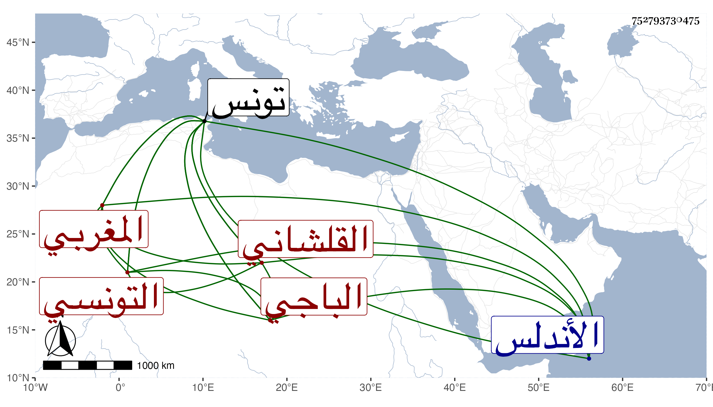

0902Sakhawi.DawLamic.ITO20230111-ara1.EIS1600.752793730475
Biography ID: 752793730475
426
عمر بن محمد القلشاني بفتح القاف وسكون اللام ثم معجمة أو جيم المغربي التونسي الباجي الأصل باجة تونس لا الأندلس فتلك منها شارح الموطأ المالكي والد قاضي الجماعة محمد الآتي وأخو أحمد الماضي . أخذ عن أبيه وغيره وولي قضاء الجماعة بتونس وأقرأ الفقه والأصلين والمنطق والمعاني والبيان والعربية وحدث بالبخاري عن أبي عبد الله بن مرزوق وشرح الطوالع شرحا حسنا لم يكمل انتهى منه أكثر من مجلد إلى الإلهيات ، وأخذ عنه خلق منهم ولده إبراهيم الأخضري وغالب الأعيان وأبو عبد الله التريكي وآخرون ممن لقيناهم كابن زغدان وكانت ولايته أولا قضاء الأنكحة ببلده كأبيه ثم قضاء الجماعة بعد موت أبي القسم القسنطيني وكان يكون بينهما ما بين الأقران فدام به قليلا حتى مات سنة ثمان وأربعين ورأيت من أرخه في سنة سبع وسمى جده عبد الله وكان أبو القسم قام على أخيه أحمد بسبب ما وقع منه من نقل كلام بعض المفسرين في قصة آدم عليه السلام وأفتى بقتله بل أفتى أخوه أيضا بذلك قبل علمه به فلما تبين أنه أخوه قام في الدفع عنه ، وكان فصيحا في التقرير بحيث يستفيد منه من يكون بمجلسه من الأعلى والأدنى ولا يمكن كبير أحد من الكلام ، ورأيت من قال أن سبب دخوله في القضاء أن عمه أحمد لم يسر سيرا بن عقارب الذي كان قبله فعز على الملك واقتضى رأيه صرفه بابن أخيه هذا وحصل لعمه نكاية عظيمة ولكن أعطوه أمامة جامع الزيتونة واستمر حتى مات فالله أعلم .
